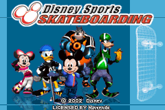

Disney Sports - Skateboarding (USA)
EEPROM 4K gbakit Built-In 📺 Joybus 💾 MultiBoot 🎮 4P Link
Cartridge Identity
- Game Code
A4DE(FamilyA4D)- Header Title
DS-SKATE-U- Maker / Revision
A4/ rev0- ROM Size
- 16.0 MiB (16,777,216 B)
- Save Media
EEPROM 4K- SHA-256
ad64cff510dd8592df5391b104eec715b6a2a691b1407369c2f6bbac21e8e54f- Engine / SDK Group
comm-009(51 families)
Screenshots

Link Cable & Multiplayer Communications
This title contains detected communication capabilities: 📺 Joybus 💾 MultiBoot 🎮 4P Link.
Detailed protocol specifications, SIO registers, Joybus commands, and MultiBoot sequences are documented in the Link & Multiplayer Reference.
- Multi-Player SIO (4P)
- 16-bit ring network · SIOCNT (
0x04000128) literals:0x000340,0x0b02e0,0x0b0308· SIODATA32/SIOMULTI0 (0x04000120) literals:0x0b0614 - GameCube Joybus
- Register literal
REG_JOYCNT(0x04000140) at offset0x49ed64 - Single-Cart MultiBoot
- Single-Cartridge MultiBoot (Download Play) client/server handler · Thumb SWI 0x25 (
0xDF25):0x40f81e,0x4b85e2,0x6f6dda,0x8a7180
Battery Save Support in gbakit
Built-in definition (A4DE)
gbakit save verify A4DE save.sav
gbakit save decode A4DE save.sav
gbakit save fix A4DE damaged.sav -o repaired.savROM Assets, Compression & Audio
- BIOS Compression
- LZ77 (
0x10): 136 streams · RLE (0x30): 6,062 streams - ROM Pointer Tables
- 1,594 tables (1,554 pointing to validated compressed streams)
- SDK Backup Tags
EEPROM_V122
Text, Fonts & Scene Data
- Primary Text Encoding
- 16-bit / UTF-16LE text (
13ASCII strings) - Font & VWF Indicators
- VWF Width Table 1bpp Font · BIOS SWIs: BitUnPack
0x10:0· LZ770x11/12:2· Huffman0x13:0· RLE0x14/15:8 - Scene & Packaging
35ROM pointer tables (≥32 entries,13≥200) ·39relativeu32TOCs ·206OAM metasprite hits
Hardware MMIO Subsystems
ppu_display0x8000858,0x8000a14,0x8000b38,0x8001544
Regional Variants & Revisions (Family A4D)
- Disney Sports - Skateboarding (Europe) (En,Fr,De,Es,It) (
A4DP, 16 MiB) - Disney Sports - Skateboarding (Japan) (
A4DJ, 16 MiB)